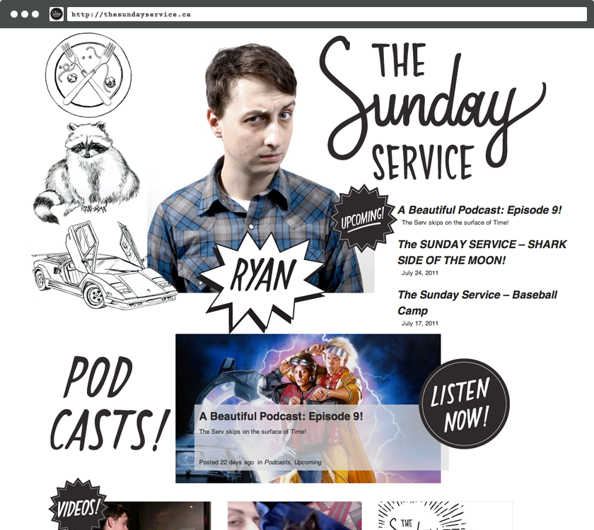
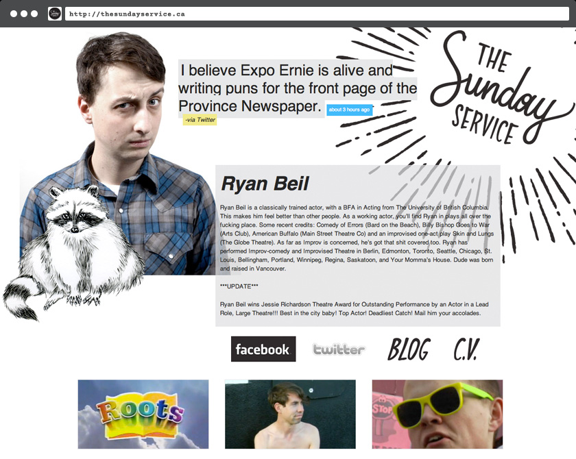
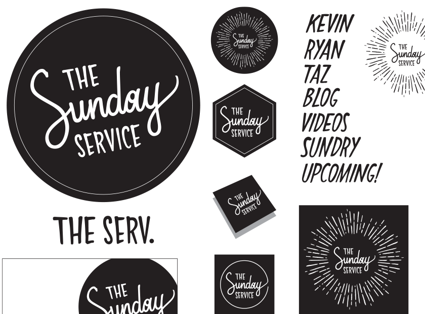

The Sunday Service Improv Comedy
An old favourite — coordinated branding and an online presence for Vancouver's primo improv comedy group.
How do you make a website convey humor without upstaging the performers that are to be highlighted? This was the task, when, in 2009 a website was requested by the Sunday Service. To answer, illustrated treatment was provided by Julia Sadler (now of Full-Time Part-Time Studio) created an animated world that complimented instead of competed with the performers.
Twitter feeds were pulled using v.1 (!) of the Twitter API.
Vimeo embeds were accommodated on post-specific video pages, and the group's podcast episodes were pulled similarly via iTunes.
The illustrated treatments turned into full-on branding for the group that is still in use today!
Conclusion
This was a really fun project. Even though the site has been retired, it has had a lasting impact on the group's visual identity.
- http://thesundayservice.ca (No Longer Live)